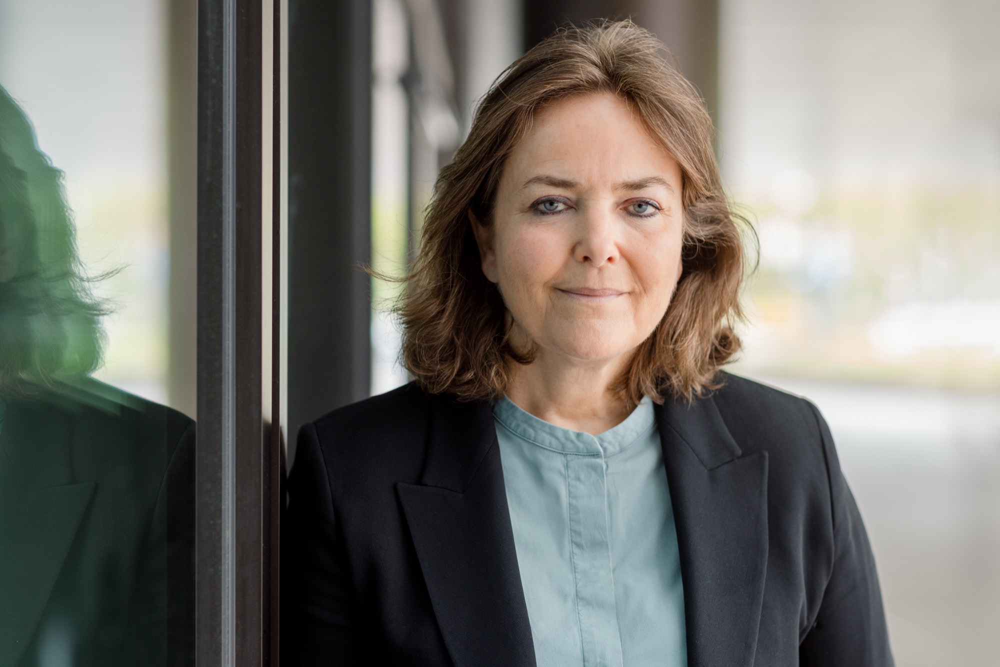

Über mich
Ihre Coach und Beraterin
Ich bin Coach, Organisationsberaterin und Supervisorin mit einem ungewöhnlichen Hintergrund: Ich bin auch diplomierte Sprachtherapeutin.
Mein akademischer Weg führte mich von der Universität Paris VI (La Sorbonne) an die Universität Kassel, wo ich meine Diplomarbeit über deutsch-französische Unterschiede schrieb – ein Thema, das bis heute im Zentrum meiner Arbeit steht.

Das bin ich
Seit 1998 lebe ich als Französin in Deutschland und bewege mich täglich zwischen zwei Kulturen, zwei Sprachen und zwei Denkweisen. Heute arbeite ich grenzüberschreitend in Deutschland (Frankfurt/Rhein-Main, München), Frankreich (Paris, Straßburg) und der Schweiz (Genf, Lausanne, Bern, Basel), vor Ort und online. Was zunächst eine persönliche Herausforderung war, wurde zu meiner größten Stärke: Ich verstehe beide Seiten und kann Brücken bauen, wo andere nur Unterschiede sehen.
Meine berufliche Erfahrung ist vielfältig: Ich habe in psychiatrischen Zentren und Krankenhäusern gearbeitet und bin seit 26 Jahren auf nationaler und lokaler Ebene im Ehrenamt aktiv. Diese Kombination hat mir fundierte Expertise in Strukturen und Strategien verschafft, sowohl operativ als auch auf Führungsebene.
Familienunternehmen, internationale Teams, Freiwilligenorganisationen: Überall dort, wo verschiedene Welten aufeinandertreffen, bin ich zu Hause. Meine Stärke: Ich erkenne die Herausforderungen und sehe den Reichtum, der in der Vielfalt steckt.
Motivation
Warum ich tue, was ich tue
Was mich antreibt, ist tief verwurzelt – in meiner persönlichen Erfahrung ebenso wie in meinem beruflichen Weg. Coach zu sein, ist für mich mehr als ein Beruf. Es ist eine Haltung, die in tiefer Überzeugung wurzelt.
Mein Motto: Potenziale entwickeln und nutzen, Unterschiede in Stärken verwandeln und Brücken bauen. Dafür braucht es zunächst Klarheit: Erst wenn der Nebel sich lichtet, kann eine Vision entstehen und die Richtung erkennbar werden. Diese Weiterentwicklung zu begleiten und gemeinsam Strategien zu erarbeiten, ist für mich essenziell.
Die Suche nach Verbesserung steht im Mittelpunkt meines Weges, beruflich wie persönlich.
Qualifikationen
Meine Qualifikationen
- Master in Coaching, Organisationsberatung und Supervision
- Master in Sprachtherapie – Universität Paris VI (La Sorbonne)
- Großes Sprachdiplom – Goethe-Institut
- Fortlaufende Fort- und Weiterbildungen
- Berufserfahrung in einem psychiatrischen Krankenhaus und einem psycho-pädagogischen Zentrum
Arbeitsweise
Meine Arbeitsweise
Ich entwickle keine Schablonen-Lösungen, sondern begleite Sie dabei, Ihren eigenen Weg als Person oder Organisation zu gestalten und zu erarbeiten.
Transparenz und Klarheit zeichnen meine Art zu arbeiten aus. Ich beschränke mich nicht auf eine Kultur oder ein Land: Meine Erfahrung hat mich gelehrt, zwischen Sektoren, Hierarchien und Logiken zu navigieren. Diese Fähigkeit, verschiedene Welten zu entschlüsseln und zu verbinden, ist mein Werkzeug, um erfolgreiche Zusammenarbeit zu gestalten.
Vertraulichkeit ist für mich selbstverständlich und Humor nicht nur eine Charaktereigenschaft, sondern ein wertvolles Arbeitsinstrument.